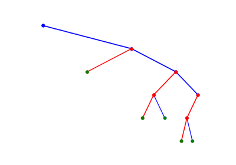

Note
Go to the end to download the full example code or to run this example in your browser via JupyterLite or Binder
Naive Bayes classifier - Visualisation¶
Naive Bayes classifier
Computing the posterior probability of x being from class c using Bayes rule.
\[P(y_c|x)= \frac{P(x|y_c)P(y_c)}{P(x)}\]
This script demonstrates Naive Bayes classifier using three examples
Example 1: Iris dataset
Example 2: Breast Cancer
Example 3: Digit Classification
# libraries
import numpy as np
import matplotlib.pyplot as plt
from sklearn import datasets
from sklearn.model_selection import train_test_split
import spkit
print('spkit version :', spkit.__version__)
from spkit.ml import NaiveBayes
spkit version : 0.0.9.7
Example 1 : Iris dataset¶
data = datasets.load_iris()
X = data.data
y = data.target
Xt,Xs,yt,ys = train_test_split(X,y,test_size=0.3)
print('Shapes: ',Xt.shape,yt.shape,Xs.shape,ys.shape)
# Fitting model (Estimating the parameters)
model = NaiveBayes()
model.fit(Xt,yt)
# ## Prediction and Accuracy
ytp = model.predict(Xt)
ysp = model.predict(Xs)
print('Training Accuracy : ',np.mean(ytp==yt))
print('Testing Accuracy : ',np.mean(ysp==ys))
# Predicting probabilities
ytpr = model.predict_prob(Xt)
yspr = model.predict_prob(Xs)
print(ytpr[0])
print(model.predict(Xs[0]), model.predict_prob(Xs[0]))
# Parameters :: $\mu$, $\sigma$
print('model parameters')
print(model.parameters)
# Visualizing the distribution
# Setting the names of classes and features (Optional)
model.set_class_labels(data['target_names'])
model.set_feature_names(data['feature_names'])
fig = plt.figure(figsize=(12,10))
model.VizPx(show=False)
plt.suptitle('Example 1: Iris dataset')
plt.tight_layout()
plt.show()
Shapes: (105, 4) (105,) (45, 4) (45,)
Training Accuracy : 0.9619047619047619
Testing Accuracy : 0.8888888888888888
[1.00000000e+00 7.04728107e-11 7.04718031e-11]
[1] [[4.60309433e-10 9.98360004e-01 1.63999602e-03]]
model parameters
{0: {'mu': array([5.01666667, 3.45 , 1.48055556, 0.24722222]), 'sig': array([0.13138889, 0.12861111, 0.02989969, 0.01249228]), 'prior': 0.34285714285714286}, 1: {'mu': array([5.775 , 2.68928571, 4.16785714, 1.30714286]), 'sig': array([0.18830357, 0.11809949, 0.23289541, 0.04566327]), 'prior': 0.26666666666666666}, 2: {'mu': array([6.59512195, 2.98780488, 5.54878049, 2.03902439]), 'sig': array([0.39851279, 0.09960738, 0.29713266, 0.06774539]), 'prior': 0.3904761904761905}}
Example 2: Breast Cancer¶
data = datasets.load_breast_cancer()
X = data.data
y = data.target
Xt,Xs,yt,ys = train_test_split(X,y,test_size=0.3)
print(Xt.shape,yt.shape,Xs.shape,ys.shape)
# ## Fitting model (estimating the parameters)
model = NaiveBayes()
model.fit(Xt,yt)
# ## Accuracy
ytp = model.predict(Xt)
ysp = model.predict(Xs)
print('Training Accuracy : ',np.mean(ytp==yt))
print('Testing Accuracy : ',np.mean(ysp==ys))
# Parameters :: $\mu$, $\sigma$
print('model parameters')
print(model.parameters[0])
model.set_class_labels(data['target_names'])
# Visualizing first 16 features
fig = plt.figure(figsize=(12,10))
model.VizPx(nfeatures=range(16),show=False)
plt.suptitle('Example 2: Breast Cancer')
plt.tight_layout()
plt.show()
# Visualizing next 14 features
fig = plt.figure(figsize=(12,10))
model.VizPx(nfeatures=range(16,30),show=False)
plt.suptitle('Example 2: Breast Cancer')
plt.tight_layout()
plt.show()
(398, 30) (398,) (171, 30) (171,)
Training Accuracy : 0.9346733668341709
Testing Accuracy : 0.9590643274853801
model parameters
{'mu': array([1.73966667e+01, 2.18275510e+01, 1.15002585e+02, 9.69621088e+02,
1.02753673e-01, 1.46457891e-01, 1.59858980e-01, 8.69185714e-02,
1.94236054e-01, 6.26795918e-02, 6.12984354e-01, 1.22654150e+00,
4.36846939e+00, 7.20774830e+01, 6.69765986e-03, 3.30667211e-02,
4.21244898e-02, 1.49212653e-02, 2.08996531e-02, 4.09656463e-03,
2.10225170e+01, 2.95112245e+01, 1.40775034e+02, 1.40174830e+03,
1.43621701e-01, 3.77730680e-01, 4.48638639e-01, 1.79744626e-01,
3.25874150e-01, 9.16917687e-02]), 'sig': array([9.95480726e+00, 1.38880539e+01, 4.68960299e+02, 1.29212768e+05,
1.59966779e-04, 2.94649712e-03, 5.75380069e-03, 1.21827179e-03,
7.88506079e-04, 5.70942046e-05, 1.16956087e-01, 2.72341753e-01,
6.75019135e+00, 3.27652579e+03, 1.02654553e-05, 3.91052970e-04,
5.34337825e-04, 3.36362895e-05, 1.17125785e-04, 4.62239505e-06,
1.74063835e+01, 2.91754012e+01, 8.28866575e+02, 3.29108921e+05,
5.28779271e-04, 2.90755457e-02, 3.41376116e-02, 2.31114044e-03,
6.02900732e-03, 4.47106286e-04]), 'prior': 0.3693467336683417}
Example 3:: Digit Classification¶
data = datasets.load_digits()
X = data.data
y = data.target
# Avoiding features with zero variance (contant value)
# X = X[:,X.var(0)>0]
Xt,Xs,yt,ys = train_test_split(X,y,test_size=0.3)
print(Xt.shape,yt.shape,Xs.shape,ys.shape)
# Fitting model (estimating the parameters)
model = NaiveBayes()
model.fit(Xt,yt)
# Accuracy
ytp = model.predict(Xt)
ysp = model.predict(Xs)
print('Training Accuracy : ',np.mean(ytp==yt))
print('Testing Accuracy : ',np.mean(ysp==ys))
# Predicting probablities
print(model.predict(Xs[0]), model.predict_prob(Xs[0]))
plt.imshow(Xs[0].reshape([8,8]),cmap='gray')
plt.axis('off')
plt.show()
print('Prediction',model.predict(Xs[0]))
# Visualizing
fig = plt.figure(figsize=(12,10))
model.VizPx(nfeatures=range(5,19),show=False)
plt.suptitle('Example 3: Digit Classification')
plt.tight_layout()
plt.show()
(1257, 64) (1257,) (540, 64) (540,)
Training Accuracy : 0.7987271280827367
Testing Accuracy : 0.7833333333333333
[2] [[0.1 0.1 0.1 0.1 0.1 0.1 0.1 0.1 0.1 0.1]]
Prediction [2]
Total running time of the script: (0 minutes 8.267 seconds)
Related examples


Decision Trees with shrinking capability - Regression example
Decision Trees with shrinking capability - Regression example

Decision Trees with shrinking capability - Classification example
Decision Trees with shrinking capability - Classification example

Decision Trees with visualisations while buiding tree
Decision Trees with visualisations while buiding tree

Decision Trees without converting Catogorical Features
Decision Trees without converting Catogorical Features